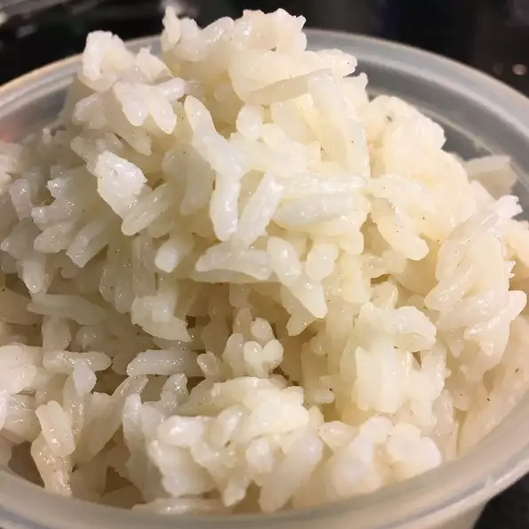

White Rice

Description
This is the perfect fluffy white rice for any event!
Ingredients
- 2 teaspoons unsalted butter
- 1 cup uncooked long-grain white rice
- 2 cups water
- 1/2 teaspoon salt
Steps
-
Melt butter in a medium saucepan over medium heat. Add rice and stir to coat.
Cook until rice grains begin to turn opaque, 1-2 minutes; do not brown.
Add water and salt.
-
Bring to a boil; reduce heat to low. Cover and let simmer for 15 minutes.
Do not lift the lid.
-
Remove from heat and let stand, covered, for 5 minutes. Fluff with a fork before serving.